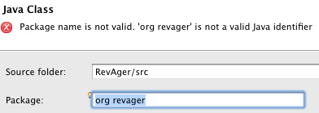
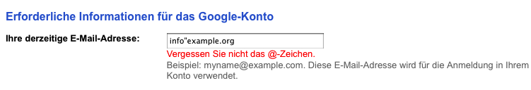

| Usability Pattern | Direkte Validierung |
|---|---|
| Problem | Benutzer möchten Daten frei eingeben, die bestimmten Kriterien genügen, z. B. ein bestimmtes Format haben oder inhaltlich gültig sind. Dabei möchten sie ungültige Eingaben rasch erkennen und korrigieren können. |
| Lösung |
Prüfe Eingabewerte bereits während der Eingabe automatisch auf Gültigkeit. Falls die Validierung (Prüfung) nicht verzögerungsfrei möglich ist, führe sie unmittelbar nach Abschluss der Eingabe durch (z. B. immer dann, wenn der Benutzer zum nächsten Eingabefeld wechselt). Führe die Validierung in jedem Fall automatisch durch, ohne einen expliziten Aufruf durch den Benutzer zu verlangen. Zeige direkt an, ob Eingaben gültig oder ungültig sind. Verwende dabei eine leicht verständliche, aber zurückhaltende Art der Darstellung. Benutzer sollten nicht abgelenkt und ihre Eingabe nicht unterbrochen werden. Gib dem Benutzer bei ungültigen Eingaben einen konstruktiven Hinweis, welche Kriterien gelten und wie er seine Eingabe korrigieren kann. |
| Illustration |
Im Registrierungsformular für neue Kunden eines Online-Shops muss ein Kunde neben verschiedenen anderen Daten auch seine E-Mail-Adresse in ein Freitextfeld eingeben. Bereits während der Kunde seine E-Mail-Adresse eingibt, prüft das System, ob der aktuelle Eingabewert eine syntaktisch gültige E-Mail-Adresse darstellt. Ist dies nicht der Fall, zeigt das System direkt neben dem Eingabefeld ein rotes Warnschild und einen Korrekturhinweis an, z. B. „Bitte geben Sie eine E-Mail-Adresse im Format name@domain.tld ein.“. Andernfalls signalisiert das System durch ein „grünes Häkchen“, dass die eingegebene E-Mail-Adresse gültig ist. Der Kunde erkennt auf diese Weise unmittelbar, ob seine Eingabe dem erwarteten Format entspricht oder nicht. |
| Beispiele |
Eclipse IDE: Erstellung einer neuen Java-Klasse Im Dialog zur Erstellung einer neuen Java-Klasse muss der Benutzer den Namen des Pakets (package) angeben, in dem die neue Klasse liegen soll. Bei ungültigen Paketnamen (im Bild: „org revager“ mit Leerzeichen) zeigt Eclipse unmittelbar eine Fehlermeldung im oberen Bereich des Dialogs an.  Direkte Validierung des Paketnamens in Eclipse Google.com: Erstellung eines Google-Kontos Der Benutzer muss bei der Erstellung des Google-Kontos seine derzeitige E-Mail-Adresse eingeben. Wechselt der Benutzer nach Eingabe der E-Mail-Adresse zum nächsten Eingabefeld, validiert das System automatisch die eingegebene Adresse und zeigt bei ungültigen Eingabewerten einen spezifischen Hinweis an (im Bild führt der Eingabewert „info“example.org“ zu dem Hinweis „Vergessen Sie nicht das @-Zeichen.“).  Direkte Validierung der eingegebenen E-Mail-Adresse bei Google |
| Nutzungskontext |
|
| Begründung | Direkte Validierung unterstützt Benutzer auf einfache und verständliche Weise bei der Eingabe gültiger Daten. Benutzer erkennen fehlerhafte Eingaben unmittelbar und können diese rasch korrigieren. Durch spezifische, konstruktive Hinweise darauf, welche Eingaben das System erwartet, wird die Lernförderlichkeit des Systems erhöht. Durch die unmittelbare Rückmeldung werden der zeitliche Abstand zwischen Dateneingabe, Rückmeldung und ggf. Korrektur durch den Benutzer minimiert und so Kontextwechsel auf Benutzerseite vermieden: Benutzer erkennen sofort, nicht erst nach weiteren Arbeitsschritten, wenn sie ihre Eingaben verändern müssen. |
| Risiken, Nachteile, Kosten |
Jede Form der Validierung benötigt Zeit. Die direkte Validierung von Eingabewerten kann deshalb zu für den Benutzer spürbaren und somit unerwünschten Verzögerungen bei der Eingabe führen, wenn die Validierung längere Zeit benötigt (z. B., wenn für die Validierung Daten von einem Server abgefragt werden müssen). In diesem Fall ist die Validierung nach Abschluss der Eingabe einer Validierung während der Eingabe vorzuziehen. Bei bewusst unvollständigen oder fehlerhaften Eingaben, die später noch vervollständigt werden sollen, können Benutzer Warnhinweise als unnötig und störend empfinden. In diesem Fall sollten auch ungültige Eingabewerte vom System akzeptiert und für die spätere Bearbeitung gespeichert werden. |
| Zusammenspiel |
Ergänzung Nachsichtiges Format Das System kann Benutzern erlauben, Eingabewerte in verschiedenen Formaten einzugeben, und die Eingabewerte automatisch korrigieren oder ergänzen. Bei Kombination mit direkter Validierung muss die Validierung nicht die tatsächlichen Eingabewerte, sondern die vom System angepassten Eingabewerte prüfen. Analog zum Validierungsergebnis kann das System den korrigierten Eingabewert anzeigen, um Benutzer auf die „Interpretation“ ihrer Eingabe hinzuweisen. Ergänzung Auto-Vervollständigung Um Benutzer dabei zu unterstützen, gültige Eingabewerte einzugeben, kann das System automatisch gültige und geeignete Vorschläge machen. |
| Anforderungserhebung |
Identifiziere Eingaben des Benutzers, für die bestimmte Format- oder inhaltliche Kriterien gelten.
Überlege, zu welchem Zeitpunkt die Validierung stattfinden soll.
|
| Anforderungsspezifikation |
Spezifiziere globale Vorgaben für den Einsatz des Usability Patterns „ Direkte Validierung “:
Spezifiziere, für welche Interaktionen das Usability Pattern „ Direkte Validierung “ eingesetzt wird. Annotiere und ergänze dazu vorhandene Use Cases :
|
{kind=link}
{kind=link}